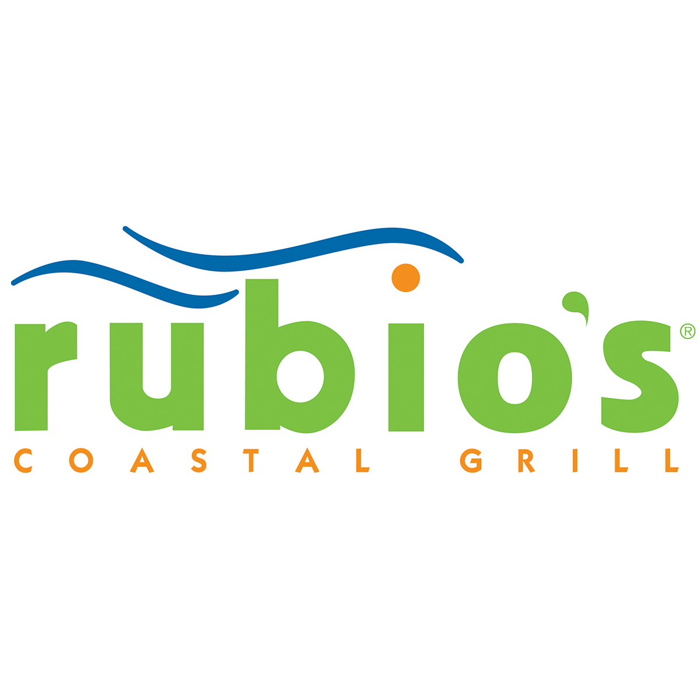

WORK HISTORY
Volunteering ( 2012-2013 )
Before I moved to the United States, I was a volunteer at my school. From 2012 to 2013, at summer, me and my friends were maintaining the grass height in front of our school, cleaning up the streets of our city, giving away toys to the shelters and so on...

Rubio's ( 2018- ... )
This is my current job. The goal is to make food for the guests, clean the kitchen, and work in a team. It’s been more than a year since I started working in Rubio’s. Throughout this time, I maintained a good relationship with all of my coworkers (and still do). I often stay after I'm done with my shift and help out the rest of the crew if the manager asks me to do so. That’s how I learned how to work in a team and how to be skillful.